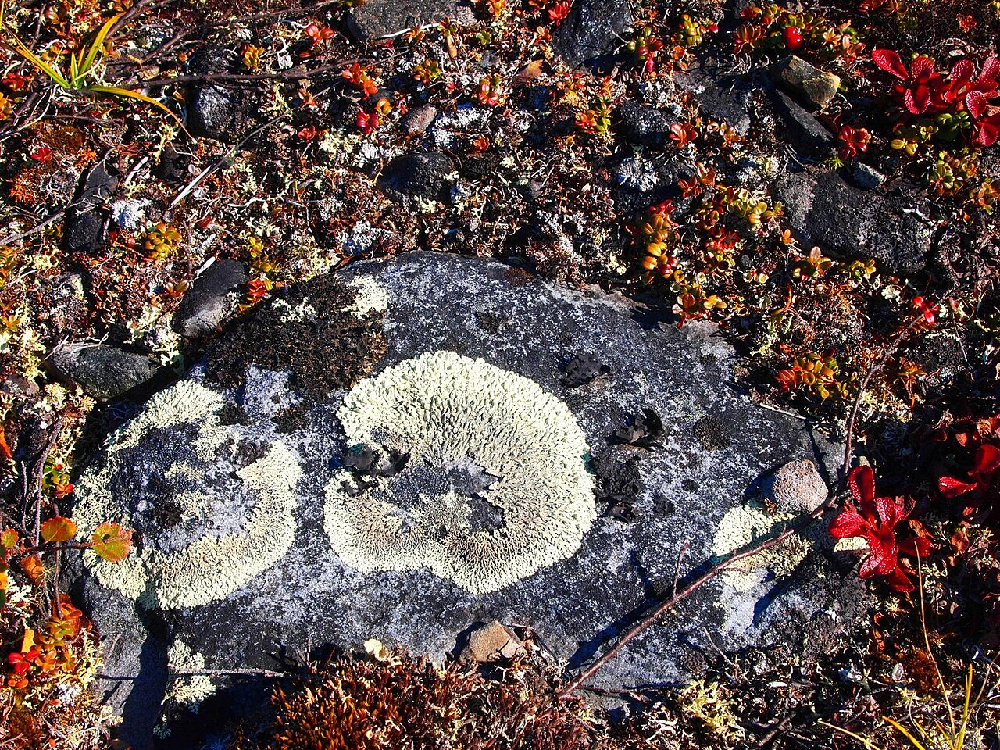
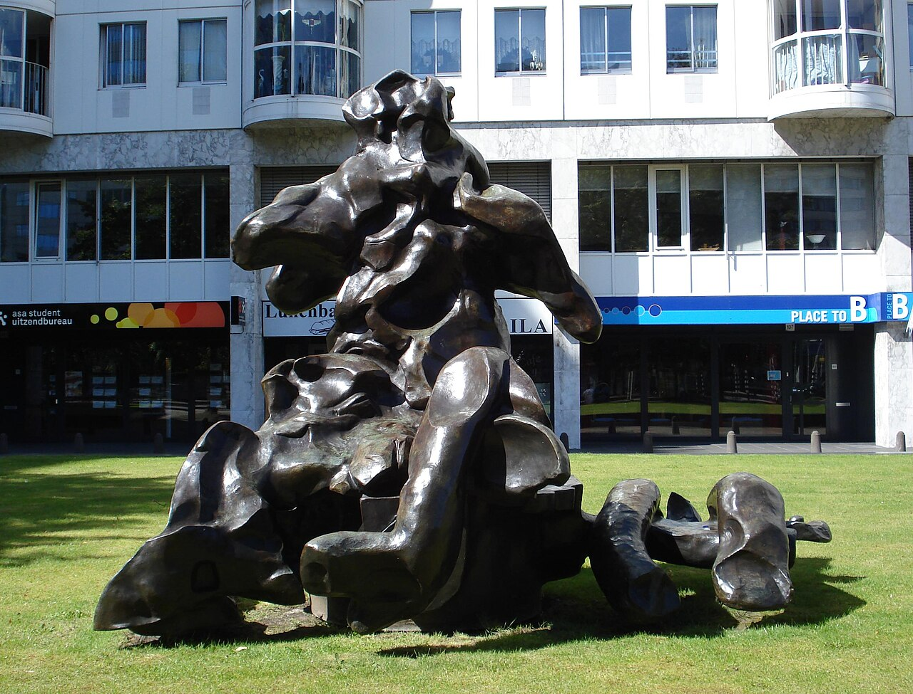
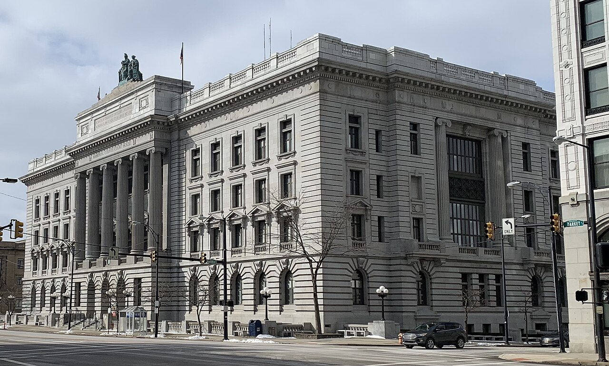
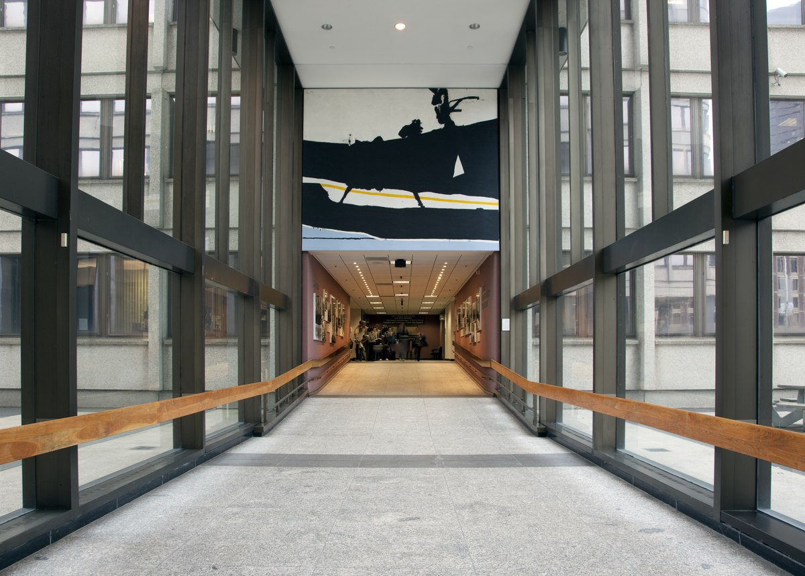
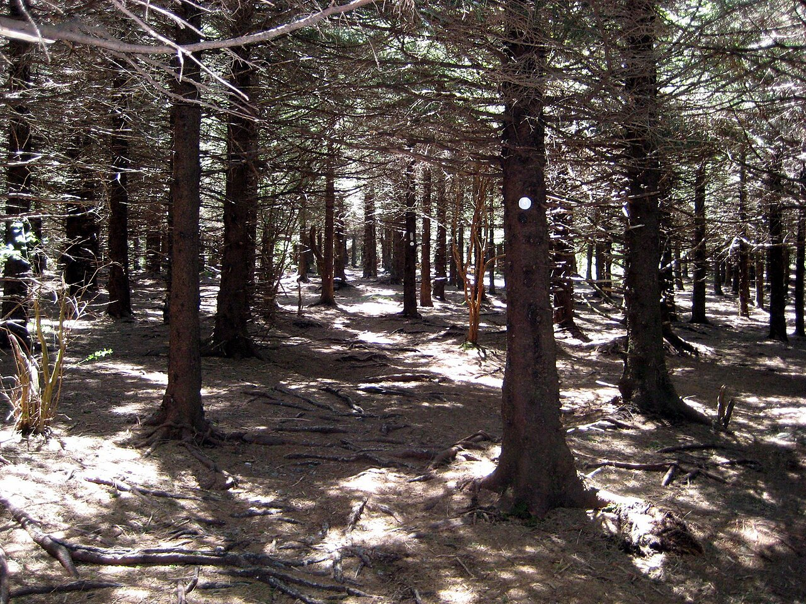

Meesterwerk: Number 1
Jackson Pollock, 1950

⚜️ UITGEBREIDE STIJLFIGUREN
🔥 ACTIE SCHILDEREN
De beweging is de kunst: Pollock goot, spatte, danste rond zijn doek. Het schilderen werd performance. Het proces belangrijker dan het resultaat.
Groot formaat: Doeken van meters breed - de kijker moet erin stappen, erdoorheen worden opgeslokt.
🔥 COLOR FIELD
Velden van kleur: Rothko's zwevende rechthoeken, Newman's "zips". Geen beeld, alleen kleur die ademt, die emotie wordt.
Contemplatief: Deze werken vragen om tijd, om stilte. Ze zijn bijna religieus - een ervaring van transcendente stilte.
🔥 AUTOMATISME
Vanuit het onderbewuste: Overgenomen van de Surrealisten. De hand beweegt zonder denken. Het ego moet wijken.
Spontaniteit: Geen voorbereiding, geen schets. Het moment is alles. Dit is existentialisme als schilderkunst.
🔥 EMOTIONELE INTENSITEIT
Pure emotie: Dit is niet "over" iets - het ís iets. De pijn, de woede, de extase van de schilder zit in de verf.
Amerikaans: Groots, meeslepend, megalomaan. Na WOII wilde Amerika culturele dominantie. Dit was hun antwoord op het Europese modernisme.
📚 TIJDSGEEST CONTEXT (1940-1960)
🌍 POLITIEK PERSPECTIEF - De Koude Oorlog en Amerikaanse Culturele Dominantie
De Tweede Wereldoorlog (1939-1945) veranderde het geopolitieke landschap fundamenteel. Terwijl Europa in puin lag, met Parijs zijn eeuwenlange positie als cultureel centrum van de westerse wereld verloor, ontstond er een machtsvacuüm dat New York maar al te graag vulde. Deze verschuiving was niet alleen geografisch maar ook ideologisch: Amerika positioneerde zich als de nieuwe hoeder van westerse beschaving en democratische waarden. Abstract Expressionisme werd het esthetische wapen in deze culturele strijd.
De CIA en Culturele Diplomatie: In de vroege jaren 1950 financierde de Central Intelligence Agency via frontorganisaties zoals de Congress for Cultural Freedom tentoonstellingen van Abstract Expressionisme in Europa en Azië. Dit was geen toeval. De Amerikaanse overheid zag in Jackson Pollock's "Number 1 (Lavender Mist)" (1950) en Mark Rothko's "Oranje en Geel" (1956) de perfecte tegenhangers van het Sovjet socialisme realisme. Waar communistische kunst figuratief, didactisch en collectivistisch was, was Abstract Expressionisme non-figuratief, individueel en vrij. De spatten van Pollock werden voorgesteld als de belichaming van Amerikaanse vrijheid - chaos misschien, maar dan chaos uit vrije wil, in tegenstelling tot de gecontroleerde uniformiteit van het communisme.
McCarthyisme en de Paradox van Vrijheid: Ironisch genoeg ontstond deze kunstvorm in een tijd van intense politieke repressie. Senator Joseph McCarthy's heksenjacht op communisten (1950-1954) creëerde een klimaat van angst en verdachtmaking. Veel Abstract Expressionisten, waaronder Willem de Kooning en Barnett Newman, waren immigranten of hadden linkse sympathieën in de jaren 30. Dat hun werk uitgerekend door de Amerikaanse overheid werd gepromoot als symbool van vrijheid, was een bizarre paradox. De abstractie zelf bood echter bescherming: geen herkenbare figuren betekende geen politieke boodschap die kon worden bekritiseerd. Robert Motherwell's "Elegy to the Spanish Republic" (1958) met haar zwarte ovals en verticale strepen was een zeldzame uitzondering - een expliciete verwijzing naar de Spaanse Burgeroorlog (1936-1939) en het falen van de democratische wereld om het fascisme tegen te houden.
De Atoombom en Existentiële Angst: De nucleaire dreiging was alomtegenwoordig. Sinds Hiroshima en Nagasaki (augustus 1945) leefde de wereld in de schaduw van mogelijke vernietiging. Deze angst vertaalde zich in de kunst naar een focus op het hier-en-nu, het moment, de daad van het schilderen zelf. Franz Kline's "Mahoning" (1956) met zijn dramatische zwarte streken tegen een witte achtergrond suggereert een urgente, bijna agressieve energie - alsof elke penseelstreek de laatste kon zijn. De schaal van deze werken (vaak meer dan 2 bij 3 meter) weerspiegelde de mondiaal schaal van de nucleaire dreiging. Het was kunst die groot dacht in een tijd waarin de mensheid de kracht had gevonden om zichzelf te vernietigen.
Amerikaanse Exceptionalisme en Schaal: De grootschaligheid van Abstract Expressionisme - denk aan Barnett Newman's "Vir Heroicus Sublimis" (1950-51) van meer dan 5 meter breed - was een bewuste keuze die Amerikaanse ambities weerspiegelde. Waar Europese kunst traditiegetrouw meer intiem en menselijk van schaal was, kozen de New York School schilders voor het monumentale, het epic. Newman's titel ("Moedig, Subliem Mens") verwees direct naar een heroïsch mensbeeld dat paste bij de Amerikaanse mythe van de frontier, de pionier, de individu die tegenover de oneindigheid staat. Helen Frankenthaler's "Mountains and Sea" (1952) met zijn innovatieve "soak-stain" techniek liet zien hoe deze Amerikanen niet alleen de Europese traditie overnamen maar deze fundamenteel transformeerden - net zoals Amerika zichzelf zag als de volgende fase van westerse beschaving.
De Marshall Plan en Cultureel Imperialisme: Het Marshall Plan (1948-1951) pompte miljarden dollars in de wederopbouw van Europa, maar het was ook een instrument van culturele invloed. MoMA (Museum of Modern Art) organiseerde reizende tentoonstellingen van Amerikaanse kunst door Europa, gefinancierd door zowel particuliere als overheidsmiddelen. Abstract Expressionisme werd geëxporteerd als bewijs van Amerikaanse creativiteit en vrijheid. Critici in Europa, gewend aan de figuratieve tradities van het realisme en surrealisme, waren vaak verbaasd of zelfs vijandig tegenover deze nieuwe Amerikaanse stijl. Maar door slimme marketing en institutionele steun werd Abstract Expressionisme snel de dominante stijl in het westerse kunstwereldje - een culturele overwinning die parallel liep met de economische en militaire dominantie van de Verenigde Staten.
Invloed op Kunstvormen: De politieke context beïnvloedde direct de esthetische keuzes. De weigering om figuurlijk te schilderen was niet alleen een esthetische maar ook een politieke keuze - in een tijd van propaganda en ideologie was pure abstractie een statement van neutrale, universele menselijkheid. De nadruk op het proces (action painting), op de handtekening van de kunstenaar in elke spetter, benadrukte individualisme tegenover collectivisme. Zelfs de titels - "Number 1", "PH-247" - waren bewust anoniem, anti-narratief, anti-propagandistisch. Dit was kunst die geen verhaal vertelde, geen boodschap verpakte, maar gewoon was - een existentieel bewijs van creatieve vrijheid in een tijd van politieke beknotting.
📖 LITERAIR PERSPECTIEF - Beat Generation en de Synergie van Woord en Beeld
Greenwich Village in de late jaren 1940 en vroege jaren 1950 was een broeinest van creatieve energie waar schilders, dichters, schrijvers en musici in dezelfde cafes, bars en lofts verkeerden. De Cedar Street Tavern en de San Remo Cafe werden legendarische plekken waar Jackson Pollock, Franz Kline en Willem de Kooning bourbon dronken met dichters Frank O'Hara en John Ashbery, waar kunstcriticus Harold Rosenberg discussieerde met schrijver Jack Kerouac. Deze fysieke nabijheid was geen toeval maar een teken van een gedeeld ethos: de zoektocht naar authentieke expressie, spontaniteit, en het doorbreken van conventies. Abstract Expressionisme en de Beat Generation waren twee gezichten van dezelfde culturele beweging.
Jack Kerouac en Spontaneous Prose: Jack Kerouac's "On the Road" (1957) en zijn concept van "spontaneous prose" - schrijven zonder revisie, de eerste gedachte is de beste gedachte - vertoonde opmerkelijke parallellen met Jackson Pollock's action painting. Beiden geloofden in het creatieve moment, de ongeremde expressie, het weigeren van bewerking. Kerouac typte "On the Road" in drie weken op één doorlopende rol papier, 120 voet lang - een letterlijke "all-over" tekst die net als Pollock's "Number 1 (Lavender Mist)" (1950) geen centrum had, geen hiërarchie, alleen een continuüm van energie. Kerouac beschreef later Pollock als een "heilige gek" en bezocht zijn studio in Springs, Long Island. De literaire criticus zou het "spontane bop-prosodie" noemen, een verwijzing naar jazz - net als de Abstract Expressionisten.
Allen Ginsberg en Howl: Allen Ginsberg's gedicht "Howl" (1956) met zijn opsomming van de "beste geesten van mijn generatie, vernietigd door waanzin, verhongerend hysterisch naakt" zou direct kunnen verwijzen naar de Abstract Expressionisten zelf. Ginsberg kende vele schilders persoonlijk - zijn vriendin, Peter Orlovsky, was de broer van schilder Nicolas Carone. "Howl's" ritmische, hypnotiserende herhalingen ("Moloch! Moloch! Moloch!") weerspiegelden de ritmische, repetitieve bewegingen van Pollock rond zijn doek. Ginsberg's techniek van "breath-length" regels - regels zo lang als één uitademing - vond zijn visuele equivalent in Rothko's grote kleurvelden: beide waren georganiseerd rond fysieke lichamelijkeheid, de adem, de slag, de polsslag.
William S. Burroughs en de Cut-Up: William S. Burroughs' "cut-up" techniek (ontwikkeld in late jaren 1950) - het letterlijk knippen en herordenen van tekst - vond een vroege visuele tegenhanger in het collage-achtige aspect van sommige Abstract Expressionistische werken. Hoewel de meeste Abstract Expressionisten puur schilderden, weerspiegelde De Kooning's "Vrouw I" (1950-1952) met zijn gelaagde, overschilderde, weer blootgelegde oppervlak een vergelijkbaar proces: knippen en plakken in verf. Burroughs zelf woonde in New York in de jaren 1940 en frequenteerde dezelfde kringen als de schilders. Zijn latere roman "Naked Lunch" (1959) met zijn fragmentarische, associatieve structuur, kon als literair equivalent worden gezien van abstract expressionisme: geen lineair verhaal, alleen intensiteit na intensiteit.
Frank O'Hara en Poëzie als Conversatie: Dichter Frank O'Hara werkte aan de balie van MoMA en schreef gedichten tijdens zijn lunchpauzes. Zijn "Lunch Poems" (1964) waren spontaan, gesprekachtig, direct - alsof je met een vriend praatte. O'Hara was ook een belangrijk kunstcriticus die regelmatig over Abstract Expressionisme schreef. Zijn gedicht "Why I Am Not a Painter" (1956) beschreef zijn vriendschap met schilder Mike Goldberg en de verschillen en overeenkomsten tussen schrijven en schilderen. De essentiële overeenkomst was het proces: beiden werkten vanuit het moment, beiden volgden een associatieve logica, beiden creëerden werken die weigerden "over" iets te zijn. O'Hara's stijl - "I do this I do that" poëzie - was een literaire versie van action painting: de handeling van het schrijven zelf als onderwerp.
Stream of Consciousness: James Joyce's "Ulysses" (1922) en Virginia Woolf's "Mrs. Dalloway" (1925) hadden de stream-of-consciousness techniek gevestigd - het weergeven van de continue stroom van gedachten zonder rationele ordening. De Abstract Expressionisten namen dit concept over maar elimineerden de figuratie. Waar Joyce's stream of consciousness nog steeds personages en verhaallijnen had (zelfs in het meest abstracte "Finnegans Wake", 1939), had Pollock's "Number 1" geen personages, geen verhaal, alleen de stroom zelf. Het was stream of consciousness gezuiverd tot pure vorm, pure energie, pure beweging. Criticus Harold Rosenberg noemde het "the American action painters" en beschreef hun doeken als "aren waarin te handelen" - niet anders dan de pagina's van Joyce waarop zijn personages handelden.
Jazz als Gemeenschappelijke Taal: Zowel de Beat schrijvers als de Abstract Expressionisten waren geobsedeerd door jazz - bebop, cool jazz, later free jazz. Charlie Parker, Dizzy Gillespie, Thelonious Monk, later Ornette Coleman - deze musici belichaamden wat de schilders en schrijvers zochten: improvisatie, spontaniteit, het doorbreken van harmonische conventies. Pollock luisterde naar jazz terwijl hij schilderde. Kerouac schreef over jazz in "On the Road" en "Mexico City Blues" (1959). De parallellen waren structureel: net als een jazzsolo geen vooraf bepaande melodie heeft maar zich ontwikkelt in het moment, zo had een Pollock-schilderij geen voorafgaande schets maar ontstond in het schilderen zelf. Franz Kline's "Mahoning" (1956) met zijn snelle, zwart-wit streken leek op een solo van Thelonious Monk: scherp, abrupt, en toch melodisch.
The New York School of Poets: Naast de schilders was er een "New York School of Poets" - O'Hara, Ashbery, James Schuyler, Barbara Guest - die expliciet verbonden waren met de Abstract Expressionisten. Ashbery's gedichten met hun verwarrende, associatieve logica, hun weigering om eenduidige betekenis te bieden, waren literaire tegenhangers van abstracte schilderkunst. In "Self-Portrait in a Convex Mirror" (1975), een gedicht over een Parmigianino schilderij, schreef Ashbery: "The soul is a captive, treated humanely" - een regel die evengoed over Rothko's "Oranje en Geel" (1956) kon gaan: de ziel gevangen in kleur, behandeld met menselijkheid.
The Black Mountain College Connectie: Black Mountain College in North Carolina was een experimentele school waar schilders (Josef Albers, Willem de Kooning, Robert Motherwell), dichters (Charles Olson, Robert Creeley, Denise Levertov), en componisten (John Cage) samenwerkten. Olson's "Projective Verse" (1950) essay introduceerde het concept van "composition by field" - een directe parallell met Abstract Expressionisme's "field painting". Olson schreef: "A poem is energy transferred from where the poet got it... by way of the poem itself to, all the way over to, the reader." Deze energietransfer was precies wat Motherwell nastreefde in "Elegy to the Spanish Republic" (1958) - energie overgedragen van kunstenaar via doek naar kijker.
Het Abstracte Woord: Een interessante paradox: de Abstract Expressionisten weigerden figuratie maar gaven hun werken vaak poëtische, literaire titels. Rothko's "Oranje en Geel" was anoniem, maar zijn "Slow Swirl at the Edge of the Sea" (1944) was expliciet poëtisch. Newman's "Vir Heroicus Sublimis" (1950-51) was Latijn, alsof de klassieke traditie moest worden opgeroepen om de abstractie te legitimeren. Gorky's "The Liver is the Cock's Comb" (1944) was een vertaalde Armeense uitdrukking - taal die niet kon worden begrepen maar wel kon worden gevoeld. Deze titels waren geen beschrijvingen maar aanwijzingen, suggesties, geestelijke bruggen tussen woord en beeld.
Critiek en Reflectie: Literaire critici als Harold Rosenberg ("The American Action Painters", 1952), Clement Greenberg ("Avant-Garde and Kitsch", 1939), en Thomas Hess (die "Willem de Kooning Paints a Picture" schreef in 1953) creëerden een taal om te spreken over abstracte kunst. Rosenberg's concept van "action painting" was een literaire metafoor: het schilderij was geen object maar een "event", een "actie". Greenberg's formalisme - kunst die zichzelf kritisch onderzoekt - was een filosofische positie die zich kon verwoorden in woorden. Hess's nauwkeurige beschrijving van De Kooning's proces was bijna literair: "De Kooning schilderde de vrouw, veegde haar weg, schilderde haar opnieuw, veegde haar weer weg" - een verhaal met terugkerende motieven, climax, en anti-climax.
Conclusie: Abstract Expressionisme kan niet volledig worden begrepen zonder zijn literaire context. De Beat Generation, de New York School of Poets, de stream-of-consciousness roman, de jazz-improvisatie - deze vormden een ecologie van expressie waarin schilderkunst één tak was. Wat ze deelden was een wantrouwen tegenover conventie, een geloof in het moment, een voorkeur voor proces boven product, en een diepe behoefte om authentiek te zijn in een wereld die steeds meer kunstmatig leek. Woord en beeld waren niet gescheiden maar twee modaliteiten van dezelfde creatieve drang. Rothko zei ooit: "A picture lives by companionship, expanding and quickening in the eyes of the sensitive observer." Dat gold ook voor gedichten, romans, jazz - kunst die leefde door interactie, door de aanwezigheid van een ontvangende geest.
🧠 PSYCHOLOGISCH PERSPECTIEF - Psychoanalyse, Trauma en het Onderbewuste
De psychologische landschappen van de Abstract Expressionisten waren doordrenkt van de theorieën van Sigmund Freud en Carl Jung, die in de eerste helft van de 20e eeuw de westerse psyche hadden gerevolutioneerd. Freud's concept van het onbewuste - dat deel van de geest dat herinneringen, verlangens en trauma's bevat die buiten het bewustzijn vallen - werd geen abstract concept maar een werkzame realiteit in de studio. De schilders van de New York School benaderden het doek als een psychoanalytische zitting: vrij associërend, automatische handelingen toelatend, het onbewuste sprekend via de hand.
Automatisme als Therapeutische Techniek: De surrealisten hadden "écriture automatique" (automatisch schrijven) ontwikkeld in de jaren 1920 als methode om het onbewuste te bereiken. Jackson Pollock transformeerde deze literaire techniek naar visuele kunst. Zijn "Number 1 (Lavender Mist)" (1950) ontstond zonder voorafgaande schets, zonder plan - de hand bewoog autonoom, gestuurd door impulsen die voorbij het bewuste denken lagen. Pollock zelf beschreef het proces: "Wanneer ik in mijn schilderij ben, ben ik me niet bewust van wat ik doe." Dit was geen gebrek aan controle maar een andere vorm van controle - controle over het loslaten van controle. De psychoanalyse leerde dat erkenning van het onbewende de eerste stap was naar heelheid. Pollock's schilderijen waren deze erkenning in verf.
Jung en Archetypische Vormen: Carl Jung's theorie van archetypen - universele symbolen diep geworteld in het collectieve onbewende - bood een kader voor abstractie. Arshile Gorky's "The Liver is the Cock's Comb" (1944) met zijn organische, biomorfe vormen suggereert primordiale organen, embryo's, cosmic seeds - vormen die voorafgaan aan individuele ervaring. Gorky, die als kind de Armeense genocide had overleefd en zijn moeder had verloren aan honger, schilderde niet zijn persoonlijke trauma maar transformeerde het naar universele archetypen van lijden en verlies. De titel zelf - een Armeense uitdrukking - was een brug tussen persoonlijk en collectief geheugen.
Trauma en Creativiteit: Vele Abstract Expressionisten droegen diepe trauma's met zich mee. Gorky's ervaring van genocide, Pollock's strijd met alcoholisme (begonnen op 15-jarige leeftijd), Rothko's depressie die uiteindelijk zou leiden tot zijn zelfmoord in 1970, De Kooning's immigrantenervaring en gevoel van vervreemding - deze persoonlijke geschiedenissen werden niet weggemoffeld maar getransformeerd in kunst. Mark Rothko's "Oranje en Geel" (1956), geschilderd in een periode van relatieve stabiliteit, straalt toch een onderliggende spanning uit. Rothko zei: "Als je alleen maar verplaatst bent door kleurrelaties, dan mis je het punt. Ik ben geïnteresseerd in het uitdrukken van grote emoties." Die "grote emoties" waren tragedie, extase, ondergang - emotionele staten die zowel persoonlijk als universeel waren.
De Agressieve Vrouw: Willem de Kooning's "Vrouw I" (1950-1952) is misschien het meest complexe psychologische document van de beweging. Twee jaar werkte De Kooning aan deze ene vrouw, laag na laag aanbrengend, verwijderend, herscheppend. Het resultaat - een vrouw wiens ogen en tanden dreigend naar voren komen, wiens lichaam versplinterd lijkt door agressieve penseelstreken - kan worden gelezen als projectie van angst, begeerte, en woede. Freudiaanse interpreten zagen oedipale conflicten, castratieangst, en de "terrible mother" archetype. De Kooning zelf zei eenvoudig: "Ik schilder vrouwen omdat ik niet anders kan." Het was dwang, obsessie, onontkoombaarheid - de psychologie niet als theorie maar als dwangneurose.
Existentiële Angst: De jaren 1950 werden gekenmerkt door wat Sartre "angoisse" noemde - existentiële angst die voortkomt uit het besef van absolute vrijheid en verantwoordelijkheid. Franz Kline's "Mahoning" (1956) met zijn dramatische zwarte streken tegen witte achtergrond visualiseert deze angst. De streken zijn urgent, bijna haastig, alsof ze moeten worden gezet voordat de moed faalt. De schaal van het werk (204 × 255 cm) dwingt de kijker tot confrontatie - er is geen ontsnapping aan de intensiteit. Dit was niet alleen esthetiek maar psychologie: kunst als confrontatie met eigen angst.
Depressie en Sublimatie: Rothko's latere werken, vooral de Seagram Mural series (1958-1959) en de Rothko Chapel (voltooid 1971), tonen een verduistering van het palet - rood wordt bordeaux, oranje wordt bruin, licht wordt donker. Deze chromatische verschuiving weerspiegelde Rothko's eigen psychische afdaling. Toch was schilderen voor Rothko een vorm van sublimatie (in Freudiaanse zin): het omzetten van pijnlijke impulsen in creatieve arbeid. Zijn zelfmoord in 1970 maakte pijnlijk duidelijk dat kunst geen definitieve genezing bood maar een tijdelijke verwerking, een manier om duisternis vorm te geven zonder eraan ten onder te gaan.
De Manische Energie: Pollock's action painting vertoonde kenmerken van wat nu manie zou worden genoemd - de immense energie, de obsessieve focus, het verlies van tijdsbesef (hij kon urenlang doorwerken zonder pauze). Zijn alcoholisme was de contrapool, de depressieve dip na de manische piek. Peggy Guggenheim, zijn eerste belangrijke mecenas, beschreef hem als "extreem nerveus, altijd bewegend, altijd drinkend." De kunst zelf - de spatten, de chaos, de energie - was de manie vastgelegd op doek. Pollock's dood in 1956 in een auto-ongeluk (hij was dronken achter het stuur) maakte de destructieve kant van deze psychologie pijnlijk duidelijk.
Het Zwijgen van het Doek: Helen Frankenthaler's "Mountains and Sea" (1952) introduceerde de "soak-stain" techniek - verf die in het doek trekt, wordt opgenomen, deel wordt van de stof. Psychologisch was dit een ander model dan de agressieve projectie van Pollock. Frankenthaler's werkwijze was meer receptief, intuïtief, "luisterend" naar het doek. De kleuren zweven, ademen, lossen op. Dit was kunst als meditatie, als contemplatie - een therapeutisch model dat meer in lijn lag met Jung's actieve imaginatie dan Freud's catharsis.
Clyfford Still en de Onbegrensde Psyche: Still's "PH-247" (1951) met zijn gescheurde kleurvelden, de botte randen waar kleuren elkaar snijden, suggereert een psyche in conflict met zichzelf. Still was de meest teruggetrokken van de Abstract Expressionisten - hij weigerde tentoonstellingen, weigerde zijn werk te verkopen, weigerde deel te nemen aan de kunstwereld. Zijn isolatie was psychisch noch sociaal maar beide. Het werk zelf weerspiegelt deze geslotenheid: het is intens, ongenaakbaar, weigert de kijker te verwelkomen. Dit was kunst als fort, als bastion, als laatste toevluchtsoord van de individuele psyche.
Conclusie: Abstract Expressionisme was in essentie een psychologisch project. Niet in de zin dat het psychologie "uitbeeldde" maar dat het psychologie "was" - de directe expressie van onbewuste impulsen, traumatische herinneringen, existentiële angsten. De technieken (automatisme, action painting, color field) waren niet alleen esthetische maar ook psychologische methoden om het onzegbare te zeggen, het onzichtbare zichtbaar te maken. In een tijd dat psychoanalyse de dominante zienswijze werd van de menselijke geest, werd Abstract Expressionisme de visuele equivalent: niet representatie van psyche maar psyche zelf, vastgelegd in verf, kleur, vorm.
⚙️ HISTORISCH PERSPECTIEF
- De jaren 50 zijn conservatief - McCarthy, de atoombom, suburbia
- Abstract Expressionisme is de tegencultuur - individualistisch, rebels, ongrijpbaar
- Jazz (bebop, free jazz) deelt de ethos: improvisatie, spontaniteit, breaking the rules
- De kunstmarkt explodeert - dit is het begin van de kunst als investering
🎭 FILOSOFISCH PERSPECTIEF - Existentialisme en de Mythe van de Kunstenaar
Het existentialisme van Jean-Paul Sartre, Albert Camus en Martin Heidegger vormde de intellectuele ruggengraat van Abstract Expressionisme. Sartre's beroemde stelling "l'existence précède l'essence" (existentie gaat vooraf aan essentie) - dat de mens eerst bestaat en vervolgens zijn eigen betekenis moet creëren - vond zijn perfecte vertaling in de schilderkunst. De Abstract Expressionist stond voor het lege doek zonder voorafgaand plan, zonder schets, zonder essentie. Door de daad van het schilderen zelf creëerde hij betekenis uit het niets. Jackson Pollock's "Number 1 (Lavender Mist)" (1950) is de belichaming van dit proces: geen vooraf bedoeld beeld, alleen de handeling van het schilderen die betekenis genereert.
Sartre en de Verantwoordelijkheid van de Schepper: In "L'Existentialisme est un humanisme" (1946) stelde Sartre dat de mens "veroordeeld is tot vrijheid" - veroordeeld omdat hij volledig verantwoordelijk is voor zijn keuzes. Voor de Abstract Expressionist betekende dit dat elke spetter, elke streep, elke kleurkeuze een morele daad was. Er was geen traditioneel kader, geen religieus of academisch systeem dat kon vertellen wat "goede" kunst was. De kunstenaar moest zelf zijn normen creëren. Mark Rothko's "Oranje en Geel" (1956) met zijn zorgvuldig afgewogen kleurvlakken weerspiegelt deze verantwoordelijkheid - elke kleur is een keuze, elke rand een beslissing. Rothko zelf sprak over het "gewicht" van kleur, de morele lading van esthetische beslissingen.
Camus en de Absurde: Albert Camus' concept van het absurde - de tegenstelling tussen de menselijke zoektocht naar betekenis en de stilte van het universum - vond echo in de abstractie zelf. Waar figuratieve kunst betekenis impliceert (een landschap betekent natuur, een portret betekent individu), onttrok Abstract Expressionisme deze betekenislaag. Barnett Newman's "Vir Heroicus Sublimis" (1950-51) met zijn eindeloze rode veld en dunne "zip" is een confrontatie met het sublieme in de zin van Edmund Burke - angst en verwondering tegelijk. Newman forceerde de kijker om betekenis te zoeken waar geen conventionele betekenis was, het absurde te omarmen.
Heidegger en het Zijn: Martin Heidegger's "Sein und Zeit" (1927) met zijn focus op "Dasein" (er-zijn) en de temporale aard van menselijke existentie beïnvloedde hoe Abstract Expressionisten dachten over tijd en proces. Pollock's action painting was niet representatie maar presentatie - niet een afbeelding van tijd maar tijd zelf, vastgelegd in verf. De druppels en spatten in "Number 1" zijn geen afbeeldingen van beweging maar sporen van beweging, fossilisering van tijd. Willem de Kooning's "Vrouw I" (1950-1952) waaraan hij twee jaar werkte, laag na laag aanbrengend en weer weghalend, is een palimpsest van tijd, een archeologie van het schilderproces.
Nietzsche en de Dood van God: Friedrich Nietzsche's proclamatie "God is dood" (uit "De Fröhliche Wissenschaft", 1882) had zijn weg gevonden naar de Amerikaanse intellectuele cultuur via Europese immigranten en vertalingen. De religieuze leegte die dit schiep, werd gevuld door kunst die transcendentie beloofde zonder religie. Rothko's werken, met hun zwevende, bijna hemelse kleurvelden, werden expliciet vergeleken met religieuze ervaringen. Rothko zelf zei: "Ik ben niet geïnteresseerd in relaties van kleur of vorm of iets anders... Ik ben geïnteresseerd in het uitdrukken van basis menselijke emoties - tragedie, extase, ondergang." De Rothko Chapel in Houston (voltooid in 1971) maakte dit expliciet: abstracte schilderkunst als spirituele ruimte, kunst als religie.
Jung en het Collectieve Onderbewuste: Carl Jung's theorie van archetypen en het collectieve onbewuste (ontwikkeld vanaf 1912) bood een alternatieve filosofische basis. Waar existentialisme individualisme benadrukte, suggereerde Jung dat bepaalde vormen en symbolen universeel waren, diep geworteld in de menselijke psyche. Arshile Gorky's "The Liver is the Cock's Comb" (1944) met zijn biomorfe, organische vormen verwijst naar dit universele vocabulaire - vormen die zowel persoonlijk trauma (Gorky's ervaring van de Armeense genocide) als collectieve archetype uitdrukken. Jackson Pollock's all-over composities konden worden gezien als visualisering van Jung's concept van het onbewuste: een veld zonder centrum, zonder hiërarchie, een kosmos van psyche.
De Mythe van de Kunstenaar als Held: Harold Rosenberg, invloedrijke criticus van Art News, beschreef in 1952 de Abstract Expressionist als een held die "niet meer schilderde maar zich bevond in een existentiële situatie." Dit beeld van de kunstenaar als moderne held - alleen, authentiek, confronterend met het lege doek zoals een existentialistische held het leven confronteert - werd de dominante mythe. Barnett Newman's titels verwezen direct naar deze heroïsche status: "Vir Heroicus Sublimis" (Moedig, Subliem Mens), "Onement" (Eenheid), "The Wild" (Het Wilde). De kunstenaar was niet langer ambachtsman of decorateur maar priester, profeet, pionier van de geest.
Automatisme en het Onderbewuste: De surrealistische techniek van automatisme - tekenen of schilderen zonder bewuste controle - werd overgenomen maar getransformeerd. Waar surrealisten automatisme gebruikten om verborgen symbolen en verhalen bloot te leggen, gebruikten Abstract Expressionisten het om directe expressie te bereiken. Franz Kline's "Mahoning" (1956) ontstond deels uit snelle, instinctieve penseelstreken die later werden verfijnd. Het was geen Freudiaanse droomanalyse maar een existentialistische daad van authentieke expressie - het onderbewuste niet als verborgen betekenis maar als directe ervaring.
Authenticiteit en Vervreemding: Existentialistische thema's van vervreemding (alienation) - de moderne mens die vervreemd is van zichzelf, van zijn werk, van de natuur - vonden hun uitdrukking in de radicaliteit van de abstractie. Clyfford Still's "PH-247" (1951) met zijn gescheurde, gelaagde oppervlakken suggereert een landschap maar onttrekt het tegelijk. Het is natuur zonder natuur, landschap zonder plaats - een visualisering van vervreemding. Still weigerde zijn werk te verkopen, weigerde deel te nemen aan de kunstmarkt, weigerde compromissen - een existentieel purisme dat zijn kunst zelf werd.
Esthetische Consequenties: Deze filosofische context vertaalde zich direct in esthetische keuzes. De nadruk op het proces (action painting) weerspiegelde existentialistische focus op handeling boven essentie. De weigering van figuratie weerspiegelde de afwijzing van vooraf bepaande betekenis. De monumentaliteit weerspiegelde het heroïsche mensbeeld. Zelfs de anonimiteit van titels ("Number 1", "PH-247") was een filosofische keuze - weigering om de kijker te leiden, weigering om betekenis op te dringen. Helen Frankenthaler's "Mountains and Sea" (1952) met zijn vloeibare, grenzeloze kleurvelden belichaamde het existentialistische ideaal van vrijheid - vrijheid van conventie, vrijheid van betekenis, vrijheid van het zelf.
🎨 MEESTERWERKEN - GEDETAILLEERDE ANALYSE
1. "Number 1 (Lavender Mist)" (1950) — Jackson Pollock
National Gallery of Art, Washington · 221 × 300 cm · Olieverf, emaille, aluminium op doek
Achtergrond: Pollock's meesterwerk - het summum van zijn "drip" periode. Geschilderd op de vloer van zijn schuur, waarbij hij er rond danste. De titel "Lavender Mist" was een toevoeging van een criticus; Pollock noemde het gewoon "Number 1".
🔍 STIJLANALYSE
All-over compositie: Geen centrum, geen rand. Het doek is één veld van energie. Het oog wordt niet geleid maar moet zelf zijn weg vinden.
Spattechniek: Pollock gebruikte stokken, kwasten, zijn handen. De verf viel, werd gegooid, werd gedanst. Het doek registreert de beweging - het is actie gevangen in materie.
Kleur: Zachte pastels (vandaar "lavender") gemengd met zwart, wit, metaal. Het is energiek maar niet agressief - een dans, geen strijd.
Schaal: Bijna 3 meter breed. Je wordt erdoor omarmd, overspoeld. Het is een ervaring, geen afbeelding. Pollock wilde dat de kijker erin "liep".
2. "Oranje en Geel" (1956) — Mark Rothko
Albright-Knox Art Gallery, Buffalo · 231 × 181 cm · Olieverf op doek
Achtergrond: Rothko's klassieke "color field" periode. Twee grote, zwevende rechthoeken van warme kleur. Geschilderd in zijn piekperiode - hij had nog geen last van depressie die later zou leiden tot zijn zelfmoord.
🔍 STIJLANALYSE
Zwevende vormen: De rechthoeken lijken te drijven, te ademen. Ze hebben geen harde rand - de kleur vervaagt naar de achtergrond. Het is immaterieel, spiritueel.
Kleuremotionaliteit: Oranje en geel zijn warm, energiek, optimistisch. Rothko gebruikte kleur als taal - deze combinatie spreekt van vreugde, van levenslust.
Schokkerig oppervlak: Als je dichtbij staat, zie je de verschillende lagen verf, de penseelstreken. Het is handwerk, arbeid. Maar vanaf afstand verdwijnt dit - alleen kleur overblijft.
Contemplatie: Rothko wilde dat je lang voor zijn werk stond. Het is geen "kijk en loop door" kunst. Het vraagt tijd, stilte, meditatie. Het is bijna een religieuze ervaring.
3. "Vrouw I" (1950-1952) — Willem de Kooning
MoMA, New York · 193 × 147 cm · Olieverf op doek

Achtergrond: De Kooning werkte twee jaar aan deze serie. Het is zijn meest controversiële werk - een vrouw die lijkt opgevreten door de verf, agressief, seksueel, gewelddadig. Het verdeelde de kunstwereld.
🔍 STIJLANALYSE
Figuratief abstract: Je ziet een vrouw - borsten, ogen, tanden - maar ze is verwrongen, versplinterd. De Kooning balanceert op de grens van herkenbaarheid.
Geweld: De penseelstreken zijn agressief, haastig. De vrouw lijkt aangevallen door de verf zelf. Het is een complexe mix van begeerte en angst.
Palet: Felle kleuren - roze, geel, blauw - tegen groen en zwart. Het is bijna grotesk, carnavalesk. De kitsch en het sublieme botsen.
Vrouwenbeeld: Feministen hebben dit werk bekritiseerd als vrouwenvijandig. De Kooning zei: "Ik schilder vrouwen omdat ik er niet omheen kan." Het is obsessie, niet liefde.
4. "Mahoning" (1956) — Franz Kline
Whitney Museum, New York · 204 × 255 cm · Olieverf op doek

Achtergrond: Kline's zwart-wit meesterwerk - dikke, architectonische penseelstreken. Geen kleur, alleen contrast. Het is industrieel, stedelijk, krachtig.
🔍 STIJLANALYSE
Zwart-wit: Geen afleiding door kleur. Alles is vorm, structuur, energie. Het is kalligrafie op gigantische schaal.
Architectuur: De lijnen lijken op bruggen, machines, stedelijke landschappen. Kline's achtergrond als illustrator van industrie is zichtbaar.
Snelheid: De streken zijn snel, direct, zonder correctie. Een moment van actie, gevangen. Het is Abstract Expressionisme in zuiverste vorm.
Negatief: Het witte wordt even belangrijk als het zwarte. De leegte is vol, de stilte spreekt. Dit is ruimte als materie.
5. "Elegy to the Spanish Republic" (1958) — Robert Motherwell
MoMA, New York · 176 × 274 cm · Olieverf op doek

Achtergrond: Motherwell schilderde meer dan 150 "Elegies" in zijn leven. Ze zijn abstracte monumenten voor de verloren Spaanse Republiek (1936-39). Politiek zonder propaganda.
🔍 STIJLANALYSE
Vorm: Ovale vormen tussen verticale strepen - als monumenten tussen zuilen. Het is begrafenis, herdachting, rouw.
Kleur: Zwart, wit, grijs, bruin - sombere kleuren. Maar ook felle accenten van rood of oker. Er is leven in de dood.
Herhaling: De serie van 150+ werken is een obsessie. Elk is anders, maar herkenbaar. Het is een levenslang rouwproces.
Intellect: Motherwell was de meest literaire van de Abstract Expressionisten. Dit werk refereert aan geschiedenis, poëzie, politiek - maar blijft abstract.
6. "Mountains and Sea" (1952) — Helen Frankenthaler
National Gallery of Art, Washington · 220 × 298 cm · Olieverf op ongeprepareerd doek

Achtergrond: Frankenthaler's doorbraak - ze goot verf direct op het ongeprepareerde doek. De "soak-stain" techniek. Color Field schilderkunst wordt geboren.
🔍 STIJLANALYSE
Stain technique: De verf dringt in het doek, wordt één met de stof. Geen lagen, geen textuur - alleen kleur die ademt.
Landschap: De titel verwijst naar een landschap, maar het beeld is abstract. Toch: blauw als water, groen als land, licht als lucht. Het landschap is onttrokken.
Air: De kleuren zweven, drijven. Er is geen zwaartekracht. Het is licht, etherisch, bijna hemels. Dit is het tegenovergestelde van het zware Abstract Expressionisme.
Vrouw in Abstract: Frankenthaler was een van de weinige vrouwen in deze mannenwereld. Haar werk is zachter, vloeiender - maar even radicaal.
7. "The Liver is the Cock's Comb" (1944) — Arshile Gorky
Albright-Knox Art Gallery, Buffalo · 186 × 249 cm · Olieverf op doek

Achtergrond: Gorky's meest complexe werk - de titel is een Armeense uitdrukking. Het is biografisch: de Holocaust, de vlucht, het verlies. Abstractie als traumaverwerking.
🔍 STIJLANALYSE
Surrealisme: Gorky was beïnvloed door de Europese Surrealisten die naar NY vluchtten. De vormen zijn organisch, biomorph - lijken op lichaamsdelen, planten, dromen.
Kleur: Felle kleuren - rood, geel, blauw - tegen een chaotische achtergrond. Het is vreugde en pijn tegelijk.
Herinnering: Het landschap van Armeense, het verleden dat verloren is. Gorky schildert wat niet meer bestaat - abstractie als nostalgie.
Brug: Gorky staat tussen Surrealisme en Abstract Expressionisme. Zijn werk is de overgang - de oude wereld ontmoet de nieuwe.
8. "Vir Heroicus Sublimis" (1950-51) — Barnett Newman
MoMA, New York · 242 × 541 cm · Olieverf op doek
[Afbeelding momenteel niet beschikbaar - alternatief wordt gezocht]
Achtergrond: Newmans grootste werk - een veld van rood met één verticale lijn ("zip"). De titel betekent "Heroïsch, subliem man". Minimalisme avant la lettre.
🔍 STIJLANALYSE
De Zip: Die ene lijn verdeelt het doek. Het is een teken, een zuil, een mens. Newman zag het als een man die alleen staat tegenover het sublieme.
Rood: Het is geen warm rood, maar een architectonisch rood. Het is ruimte, niet emotie. Newman wilde het absolute bereiken.
Schaal: Meer dan 5 meter breed! Je moet erin stappen, erdoorheen lopen. Het is een ervaring van ruimte, van tijd.
Sublim: Burke's theorie van het sublieme - angst en verwondering. Newman creëert dit met alleen kleur en lijn. Het is spiritualiteit zonder religie.
9. "PH-247" (1951) — Clyfford Still
Privécollectie · 236 × 208 cm · Olieverf op doek
[Afbeelding momenteel niet beschikbaar - alternatief wordt gezocht]
Achtergrond: Still was de meest geheime van de Abstract Expressionisten. Hij weigerde de meeste tentoonstellingen. Zijn werk is intens, bijna angstaanjagend.
🔍 STIJLANALYSE
Kleurvelden: Grote vlakken van onnatuurlijke kleuren - geel, oranje, zwart. Ze botsen, snijden, vervloeien. Het is geen harmonie, maar strijd.
Tekstuur: Dikke verf, krassen, scheuren. Het oppervlak is als verbrande aarde. Still schilderde met woede, met noodzaak.
Geheim: Still weigerde zijn werken te verkopen aan mensen die hij niet respecteerde. Zijn kunst was heilig, niet commercieel.
Menselijk: De titels (PH-247) zijn anoniem, maar het werk is extreem persoonlijk. Het is een verhaal zonder woorden.
10. "White Writing" (1944) — Mark Tobey
Seattle Art Museum · 61 × 51 cm · Caseïne op papier
[Afbeelding momenteel niet beschikbaar - alternatief wordt gezocht]
Achtergrond: Tobey's "white writing" - witte lijnen op donkere achtergrond, geïnspireerd door kalligrafie en het Bahá'í geloof. Het is meditatief, spiritueel, Oosters.
🔍 STIJLANALYSE
All-over: Geen centrum, geen compositie. Het hele oppervlak is gelijk. Het is netwerk, web, energie.
Kalligrafie: De witte lijnen zijn als Chinese karakters - beweging, adem, leven. Maar ze zijn abstract, leeg. Vorm zonder inhoud.
Spiritualiteit: Tobey was Bahá'í - zijn werk is gebed, meditatie. Het is stilte in beweging. Dit is Abstract Expressionisme als mystiek.
Schoksgewijs: Kleine formaat (t.o.v. Pollock), delicate techniek. Het is intiem, niet monumentaal. De kijker moet dichtbij komen.
📚 CONCLUSIE: DE AMERIKAANSE DROOM
Abstract Expressionisme leert ons:
- Dat groot kan: Grootschalig denken, grootschalig schilderen
- Dat het proces telt: De actie van het schilderen is even belangrijk als het resultaat
- Dat emotie abstract kan zijn: Je hoeft geen figuur te schilderen om gevoel over te brengen
- Dat kleur machtig is: Rothko bewijst dat twee kleurvlakken genoeg kunnen zijn
- Dat Amerika cultureel kon domineren: Dit was hun moment, hun statement
Abstract Expressionisme is de laatste grote kunstbeweging die geloofde in de mythe van de kunstenaar als held.